Gallery
Each figure below is the output of savetikz compiled with pdfLaTeX (left), next to CairoMakie's rendering of the same figure (right). Text in the TikZ version is typeset by LaTeX, here in Latin Modern. In your document it will use your fonts. Every example starts with using CairoMakie, TikzMakie, LaTeXStrings and ends with savetikz("name.tex", fig); the .tex links are exactly what that writes.
Basic line plot
Tick labels, axis labels, legend and title are all LaTeX text nodes; L"..." strings become real LaTeX math.
xs = range(0, 4π, length = 200)
fig = Figure(size = (600, 350))
ax = Axis(fig[1, 1]; xlabel = L"t", ylabel = L"f(t)", title = "Two signals")
lines!(ax, xs, sin.(xs); label = L"\sin t")
lines!(ax, xs, cos.(xs) .* exp.(-xs ./ 8); label = L"e^{-t/8}\cos t", linestyle = :dash, linewidth = 2)
axislegend(ax; position = :rt)
fig| TikzMakie → pdfLaTeX | CairoMakie |
|---|---|
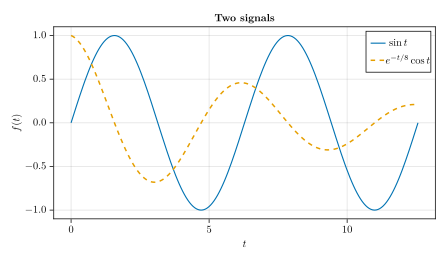 | 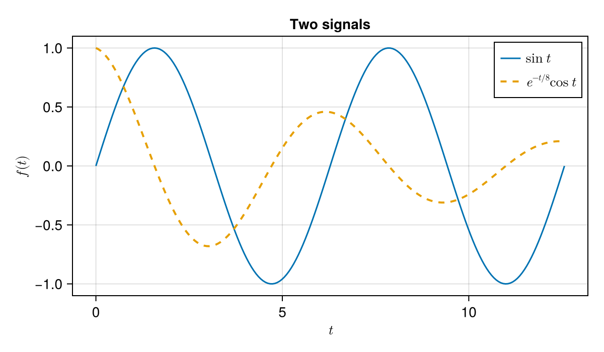 |
Download: 01_basic.tex · PDF
Sized for a document
size_pt and latex_theme make the picture exactly \textwidth wide with 10pt Computer Modern text.
with_theme(latex_theme(fontsize = 10)) do
fig = Figure(size = size_pt(345, 200)) # 345pt = \textwidth of a 10pt article
ax = Axis(fig[1, 1]; xlabel = L"time $t$ (s)", ylabel = L"x(t)", title = "Damped oscillator")
ts = range(0, 10, length = 300)
for γ in (0.1, 0.3, 1.0)
lines!(ax, ts, exp.(-γ .* ts) .* cos.(2ts); label = L"\gamma = %$γ")
end
axislegend(ax; position = :rt)
ax2 = Axis(fig[1, 2]; title = "Phase portrait", xlabel = L"x", ylabel = L"\dot{x}", aspect = 1)
x = exp.(-0.1 .* ts) .* cos.(2ts)
v = -0.1 .* x .- 2 .* exp.(-0.1 .* ts) .* sin.(2ts)
lines!(ax2, x, v; color = ts, colormap = :viridis)
colsize!(fig.layout, 2, Auto(0.6))
fig
end| TikzMakie → pdfLaTeX | CairoMakie |
|---|---|
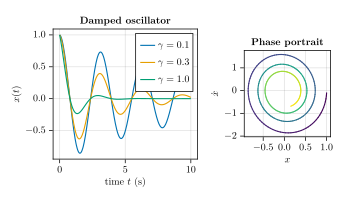 | 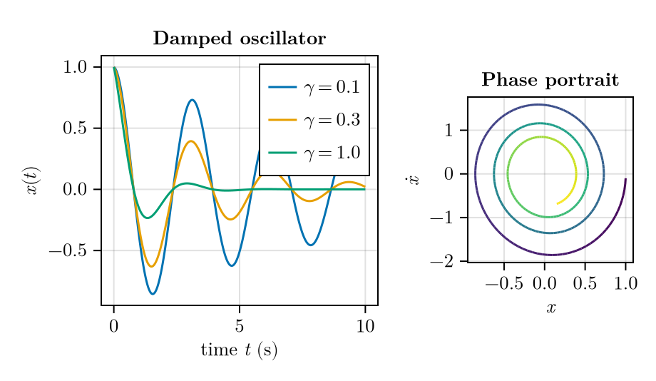 |
Download: 02_article_width.tex · PDF
Scatter markers
Circles, rectangles and Makie's Bézier markers become TikZ paths; colormapped colours and sizes are kept.
fig = Figure(size = (600, 380))
ax = Axis(fig[1, 1]; title = "Marker shapes", yticks = (1:7, ["circle", "rect", "utriangle", "diamond", "cross", "star5", "hexagon"]))
for (i, m) in enumerate([:circle, :rect, :utriangle, :diamond, :cross, :star5, :hexagon])
scatter!(ax, 1:6, fill(i, 6); marker = m, markersize = 16, strokewidth = 1, strokecolor = :black)
end
scatter!(ax, 1:6, fill(8, 6); color = 1:6, colormap = :plasma, markersize = 6:5:31)
ylims!(ax, 0.3, 8.9)
fig| TikzMakie → pdfLaTeX | CairoMakie |
|---|---|
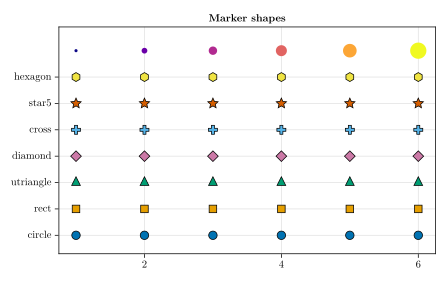 | 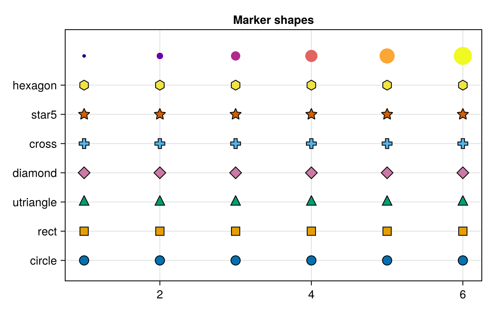 |
Download: 03_markers.tex · PDF
Text, math and escaping
LaTeXStrings pass through unchanged, rich text maps to super/subscripts, and plain strings are escaped.
fig = Figure(size = (600, 380))
ax = Axis(fig[1, 1]; xlabel = L"\alpha \in [0, 2\pi]", ylabel = L"\frac{\sin \alpha}{\alpha}", title = L"\mathrm{sinc}(\alpha) = \frac{\sin \alpha}{\alpha}")
xs = range(0.01, 2π, length = 200)
lines!(ax, xs, sin.(xs) ./ xs)
text!(ax, 3.2, 0.7; text = "plain text: 50% & #1_x {braces} ~ ^", align = (:center, :center))
text!(ax, 1.0, -0.05; text = rich("rich: x", superscript("2"), " + y", subscript("i")), rotation = π / 8)
text!(ax, 4.5, 0.25; text = L"\int_0^\infty e^{-x^2}\,dx = \frac{\sqrt{\pi}}{2}", align = (:center, :center))
fig| TikzMakie → pdfLaTeX | CairoMakie |
|---|---|
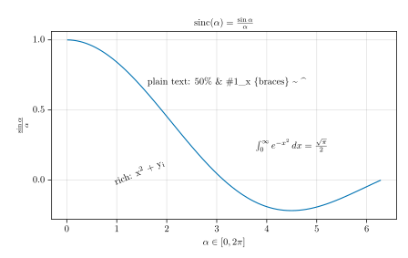 | 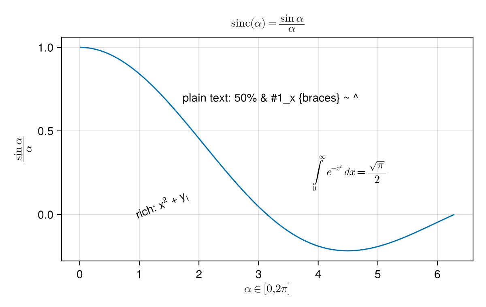 |
Download: 04_text.tex · PDF
Bars and histograms
Polygons are written as single vector paths, not triangle meshes, so there are no hairline seams.
using Random
Random.seed!(1)
fig = Figure(size = (650, 300))
ax1 = Axis(fig[1, 1]; title = "barplot", xticks = (1:4, ["north", "east", "south", "west"]))
barplot!(ax1, 1:4, [3.2, 1.4, 4.1, 2.6]; color = [:steelblue, :orange, :seagreen, :crimson], bar_labels = :y, strokewidth = 1)
ylims!(ax1, 0, 5)
ax2 = Axis(fig[1, 2]; title = "hist")
hist!(ax2, randn(2000); bins = 30, strokewidth = 0.5, strokecolor = :white)
fig| TikzMakie → pdfLaTeX | CairoMakie |
|---|---|
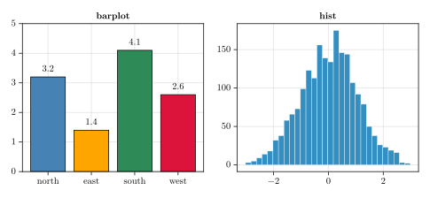 | 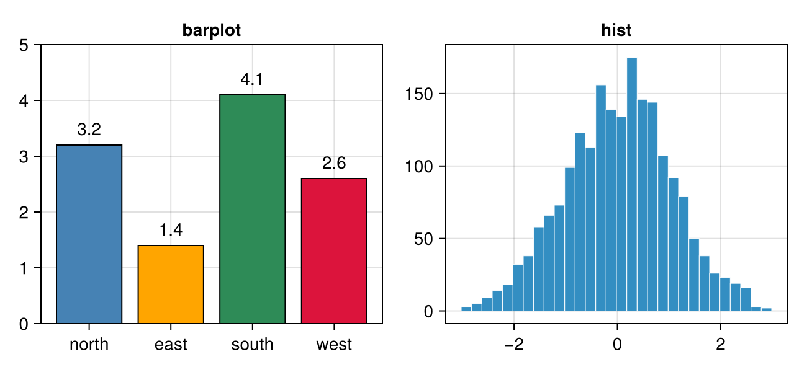 |
Download: 05_bars_hist.tex · PDF
Heatmap and colorbar
Regular heatmaps and images are embedded as PNGs (upsampled so viewers don't blur them).
xs = range(-3, 3, length = 40)
zs = [sin(x) * cos(y) + 0.3x for x in xs, y in xs]
fig = Figure(size = (560, 420))
ax = Axis(fig[1, 1]; xlabel = L"x", ylabel = L"y", title = L"z = \sin x \cos y + 0.3x", aspect = DataAspect())
hm = heatmap!(ax, xs, xs, zs; colormap = :balance)
Colorbar(fig[1, 2], hm; label = L"z")
fig| TikzMakie → pdfLaTeX | CairoMakie |
|---|---|
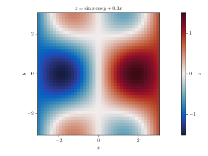 | 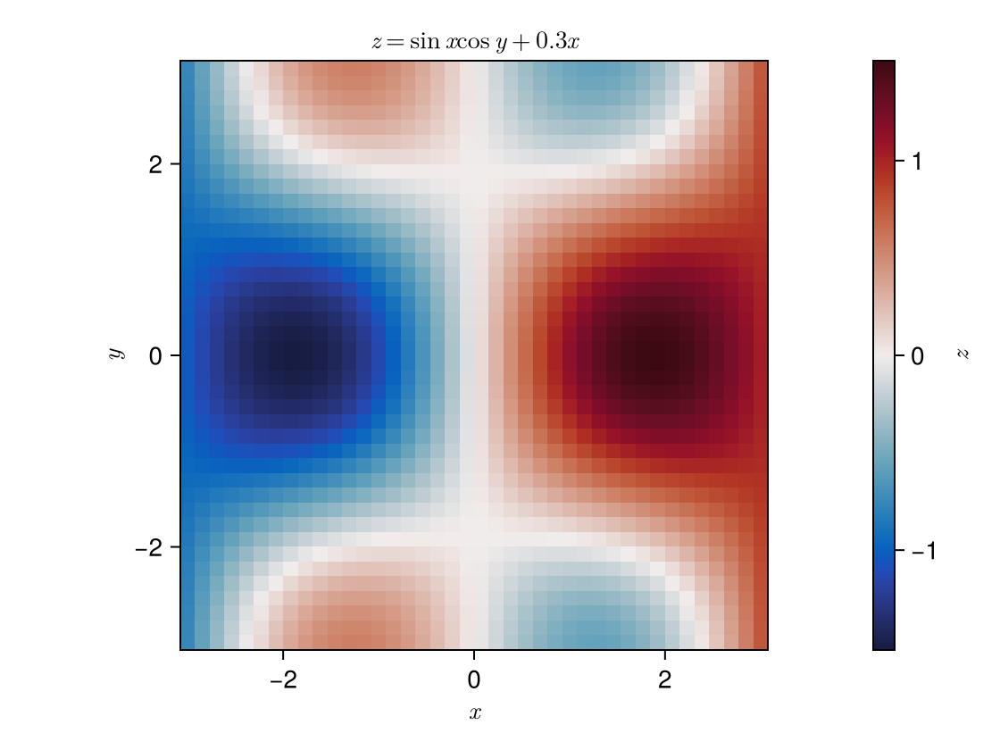 |
Download: 06_heatmap.tex · PDF
Filled contours
xs = range(-2, 2, length = 80)
f(x, y) = exp(-(x^2 + y^2)) + 0.6exp(-((x - 1)^2 + (y - 1)^2) / 0.3)
zs = [f(x, y) for x in xs, y in xs]
fig = Figure(size = (560, 440))
ax = Axis(fig[1, 1]; title = "contourf + contour", aspect = DataAspect())
cf = contourf!(ax, xs, xs, zs; levels = 10)
contour!(ax, xs, xs, zs; levels = 10, color = :black, linewidth = 0.5)
Colorbar(fig[1, 2], cf)
fig| TikzMakie → pdfLaTeX | CairoMakie |
|---|---|
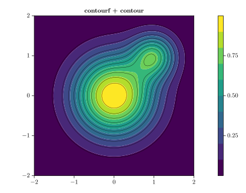 | 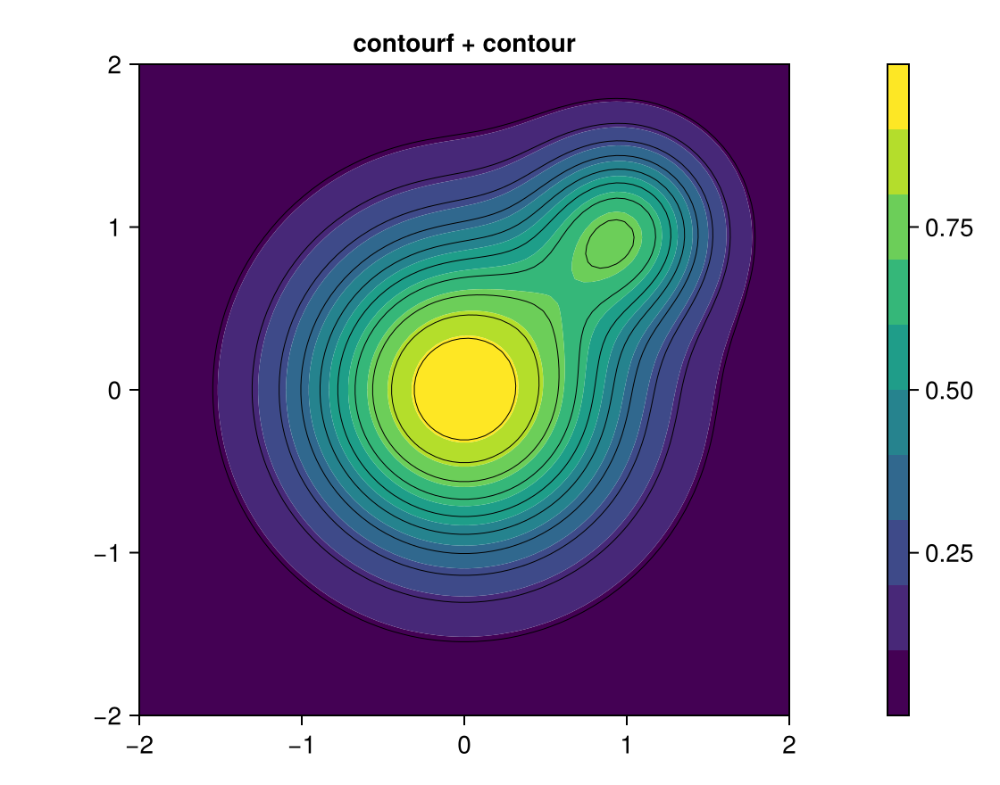 |
Download: 07_contour.tex · PDF
Layouts
GridLayout positions, spanning labels, rotated tick labels and shared legends carry over unchanged.
using Random
Random.seed!(2)
fig = Figure(size = (650, 480))
Label(fig[0, 1:2], "Four panels"; fontsize = 20, font = :bold)
for (k, (i, j)) in enumerate(Iterators.product(1:2, 1:2))
ax = Axis(fig[i, j]; title = "panel $k", xticklabelrotation = i == 2 ? π / 4 : 0.0)
for s in 1:3
lines!(ax, 1:20, cumsum(randn(20)); label = "series $s")
end
hlines!(ax, [0]; color = :gray, linestyle = :dot)
end
Legend(fig[1:2, 3], content(fig[1, 1]); framevisible = false)
fig| TikzMakie → pdfLaTeX | CairoMakie |
|---|---|
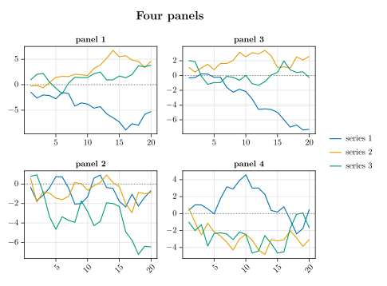 | 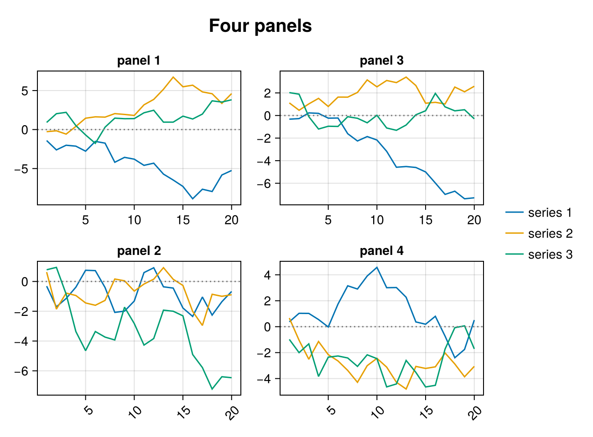 |
Download: 08_layout.tex · PDF
Statistical plots
using Random
Random.seed!(3)
fig = Figure(size = (650, 450))
ax1 = Axis(fig[1, 1]; title = "boxplot + violin", xticks = (1:3, ["A", "B", "C"]))
cats = rand(1:3, 300)
vals = randn(300) .+ 0.5cats
violin!(ax1, cats, vals; color = (:steelblue, 0.4))
boxplot!(ax1, cats, vals; width = 0.3, color = :white, strokewidth = 1, whiskerwidth = 0.3)
ax2 = Axis(fig[1, 2]; title = "errorbars + band")
xs = 1:10
ys = sqrt.(xs)
band!(ax2, xs, ys .- 0.4, ys .+ 0.4; color = (:orange, 0.3))
errorbars!(ax2, xs, ys, 0.2 .* ys; whiskerwidth = 6)
scatter!(ax2, xs, ys; color = :black)
ax3 = Axis(fig[2, 1:2]; title = "density + stairs + stem")
density!(ax3, randn(500); color = (:seagreen, 0.4), strokewidth = 1, strokecolor = :seagreen)
stairs!(ax3, -3:0.5:3, rand(13) .* 0.4; color = :crimson)
stem!(ax3, -3:0.5:3, rand(13) .* -0.2)
fig| TikzMakie → pdfLaTeX | CairoMakie |
|---|---|
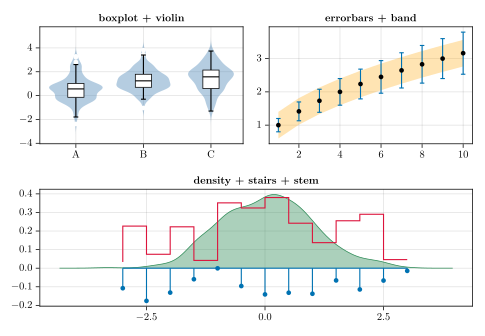 | 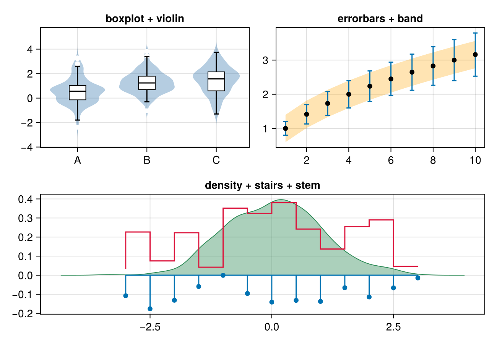 |
Download: 09_statistics.tex · PDF
Log axes
Makie's superscript tick labels become math: $10^{-4}$.
ns = 2 .^ (1:12)
fig = Figure(size = (560, 380))
ax = Axis(fig[1, 1]; xscale = log2, yscale = log10, xlabel = L"N", ylabel = "error", title = "Convergence")
scatterlines!(ax, ns, 1 ./ ns; label = L"\mathcal{O}(N^{-1})")
scatterlines!(ax, ns, 1 ./ ns .^ 2; label = L"\mathcal{O}(N^{-2})", marker = :rect)
axislegend(ax; position = :lb)
fig| TikzMakie → pdfLaTeX | CairoMakie |
|---|---|
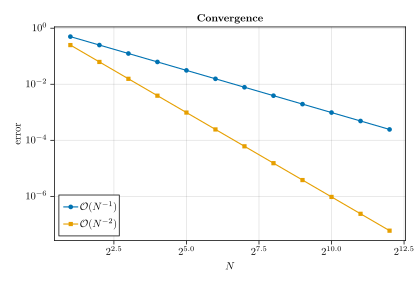 | 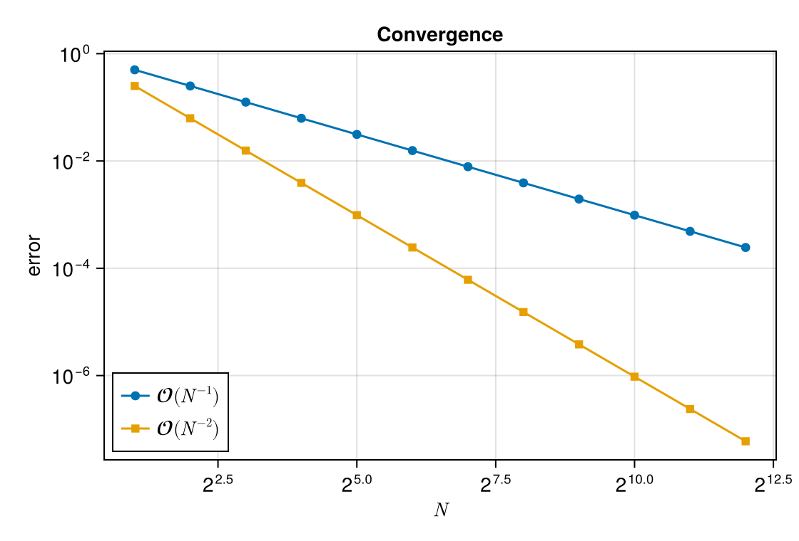 |
Download: 10_log_axes.tex · PDF
3D and rasterisation
Vector 3D meshes are flat-shaded; set Makie's rasterize attribute to embed a lit surface as an image while axes and labels stay vector + LaTeX.
xs = range(-1, 1, length = 40)
zs = [x^2 - y^2 for x in xs, y in xs]
fig = Figure(size = (700, 330))
ax1 = Axis3(fig[1, 1]; title = "vector (flat-shaded)", xlabel = L"x", ylabel = L"y", zlabel = L"z")
surface!(ax1, xs[1:3:end], xs[1:3:end], zs[1:3:end, 1:3:end])
ax2 = Axis3(fig[1, 2]; title = "rasterize = true", xlabel = L"x", ylabel = L"y", zlabel = L"z")
surface!(ax2, xs, xs, zs; rasterize = true)
fig| TikzMakie → pdfLaTeX | CairoMakie |
|---|---|
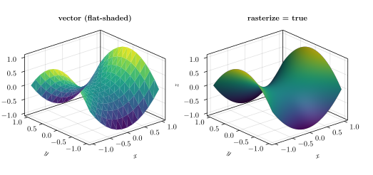 | 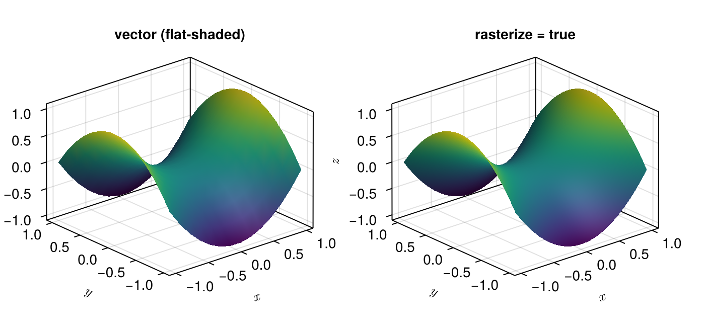 |
Download: 11_axis3_rasterize.tex · PDF
Polar axis
θ = range(0, 2π, length = 400)
fig = Figure(size = (450, 450))
ax = PolarAxis(fig[1, 1]; title = "Rose curves")
for k in (2, 3, 5)
lines!(ax, θ, abs.(cos.(k .* θ)); label = "k = $k")
end
fig| TikzMakie → pdfLaTeX | CairoMakie |
|---|---|
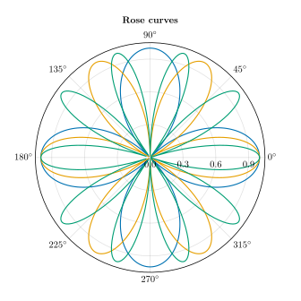 | 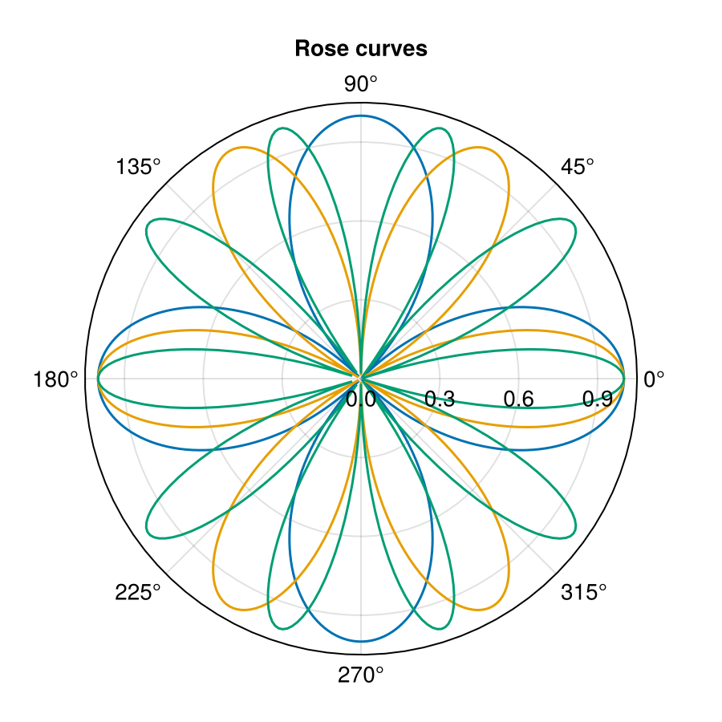 |
Download: 12_polar.tex · PDF